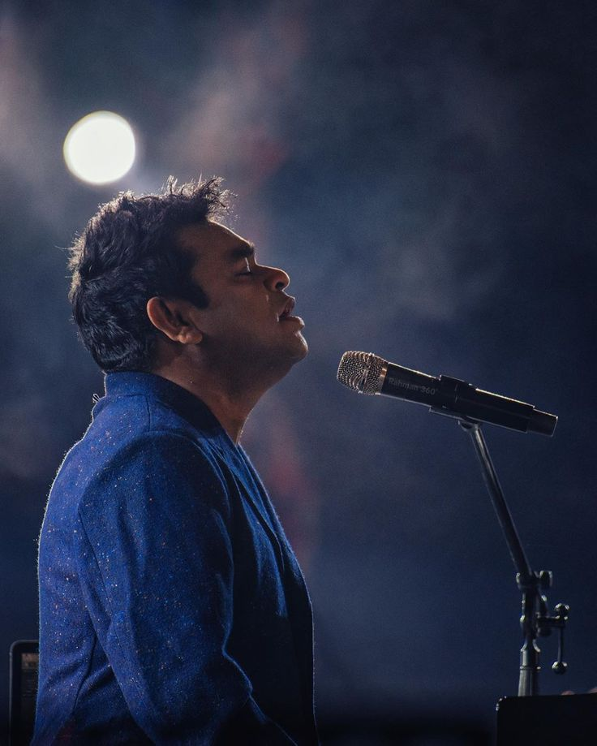

|  |
A.R. Rahman,is an acclaimed Indian composer, singer, and music producer known for blending classical Indian music with electronic and world music. Born in 1967 in Chennai, he gained fame with his debut film score for Roja (1992). Rahman has won numerous awards, including two Academy Awards, two Grammy Awards, and a BAFTA for his work on Slumdog Millionaire (2008). Dubbed the "Mozart of Madras," his contributions have revolutionized Indian cinema music. Rahman’s work spans various languages and genres, making him a global music icon celebrated for his innovation and soulful compositions. |